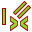

Верстак Эскизов используется для создания 2D геометрии используемой Верстак Проектирования Деталей и другими верстаками. Обычно двумерная геометрия принимается за стартовую точку для большинства моделей САПР - простой двумерный набросок может быть 'выдавлен' в трёхмерную форму, в дальнейшем двумерные наброски могут быть использованы для создания карманов на поверхности этой формы и эскизы могут быть использованы для определения «подушечки» (выдавленных) на поверхности 3D-объектов. Вместе с модулем двоичных операция верстак эскизов образует ядро объёмного проектирования.
The Sketcher workbench itself features constraints - allowing 2D shapes to be constrained to precise geometrical definitions. And a constraint solver which calculates the constrained-extent of 2D geometry and allows interactive exploration of sketch degrees-of-freedom.
Contents
Основы ограничений эскиза
Чтобы объяснить как работает модуль эскизов, может быть полезно сравнить его с "традиционным" способом черчения.
Traditional Drafting
The traditional way of CAD drafting inherits from the old drawing board. Orthogonal (2D) views are drawn manually and intended for producing technical drawings (also known as blueprints). Objects are drawn precisely to the intended size or dimension. If you want to draw an horizontal line 100mm in length starting at (0,0), you activate the line tool, either click on the screen or input the (0,0) coordinates for the first point, then make a second click or input the second point coordinates at (100,0). Or you will draw your line without regard to its position, and move it afterwards. When you've finished drawing your geometries, you add dimensions to them.
Ограниченные Эскизы
Sketcher отходит от этой логики. Объекты не нужно чертить так как вы планируете чтобы они располагались, так как они будут заданы позже с помощью ограничений. Объекты могут быть нарисованы свободно и до тех пор пока они не связаны, они могут быть изменены. Они находятся в "плавающем" состоянии и могут быть перемещены,растянуты, их можно вращать , масштабировать и.т.д. Это делает процесс проектирования более гибким.
What are constraints?
Instead of dimensions, Constraints are used to limit the degrees of freedom of an object. For example, a line without constraints has 4 Degrees Of Freedom (abbreviated as " DOF "): it can be moved horizontally or vertically, it can be stretched, and it can be rotated.
Применение горизонтального и вертикального ограничения, или углового ограничения (относительно другой линии или одной из координатных осей), ограничит её способность вращаться, тем самым оставляя линию с двумя степенями свободы. Блокировка одной из её точек уберет ещё одну степень свободы, по сравнению с первоначальным. И применив ограничение "размером" уберем последнюю степень свободы. Линия будет считаться полностью ограниченной.
Multiple objects can be constrained between one another. Two lines can be joined through one of their points with the coincident point constraint. An angle can be set between them, or they can be set perpendicular. A line can be tangent to an arc or a circle, and so on. A complex Sketch with multiple objects will have a number of different solutions, and making it fully-constrained means that just one of these possible solutions has been reached based on the applied constraints.
Существует два вида ограничений: геометрические и размерные. Они подробно описаны ниже, в разделе #Инструменты.
What the Sketcher is not good for
The Sketcher is not intended for producing 2D blueprints. Once sketches are used to generate a solid feature, they are automatically hidden. Constraints are only visible in Sketch edit mode.
Если вам только нужно создать 2D виды для печати и вам не нужна трехмерные модели, посмотрите Чертежный модуль (имейте в ввиду что Чертежный Инструментарий также может быть использован для создания не доступной пока в Sketcher геометрии, например B-Splines.)
Sketching Workflow
A Sketch is always 2-dimensional (2D). To create a solid, a 2D Sketch of a single enclosed area is created and then either Padded or Revolved to add the 3rd dimension, creating a 3D solid from the 2D Sketch.
If the Sketch has segments that cross one another, places where a Point is not directly on a segment, or places where there are gaps between endpoints of adjacent segments, Pad or Revolve won't create a solid. The exception to this rule is that it doesn't apply to Construction (blue) Geometry.
Inside the enclosed area we can have smaller non-overlapping areas. These will become voids when the 3D solid is created.
Инструменты
Инструменты эскизного инструментария располагаются в меню Sketcher которое появляется после загрузки инструментария.
Геометрия Sketcher
Инструменты создания объектов.
-
 Создать точку: Рисует точку.
Создать точку: Рисует точку. -
 Создать линию: Рисует отрезок через две точки
Создать линию: Рисует отрезок через две точки -
 Создать дугу по центру: Рисует сегмент дуги по заданным центру, радиусу, начальному и конечному углу
Создать дугу по центру: Рисует сегмент дуги по заданным центру, радиусу, начальному и конечному углу -
 Создать дугу по трём точкам: Рисует сегмент дуги по двум конечным точкам и дополнительной точке окружности.
Создать дугу по трём точкам: Рисует сегмент дуги по двум конечным точкам и дополнительной точке окружности. -
 Создать окружность: Рисует окружность по центру и радиусу
Создать окружность: Рисует окружность по центру и радиусу -
 Создать окружность по трём точкам : Создать окружность указанием трёх точек на ней.
Создать окружность по трём точкам : Создать окружность указанием трёх точек на ней. -
 Сечения конуса:
Сечения конуса:
-
 Ellipse by center : Draws an ellipse by center point, major radius point and minor radius point. (v0.15)
Ellipse by center : Draws an ellipse by center point, major radius point and minor radius point. (v0.15) -
 Ellipse by 3 points : Draws an ellipse by major diameter (2 points) and minor radius point. (v0.15)
Ellipse by 3 points : Draws an ellipse by major diameter (2 points) and minor radius point. (v0.15) -
 Arc of ellipse : Draws an arc of ellipse by center point, major radius point, starting point and ending point. (v0.15)
Arc of ellipse : Draws an arc of ellipse by center point, major radius point, starting point and ending point. (v0.15)
-
-
 Polyline (multiple-point line): Рисует кривую состоящую из отрезков
Polyline (multiple-point line): Рисует кривую состоящую из отрезков -
 Прямоугольник: Рисует прямоугольник по двум противоположным
Прямоугольник: Рисует прямоугольник по двум противоположным - Треугольник: Рисует равносторонний треугольник, вписанный в окружность конструкционной геометрии. (v0.15)
-
 Квадрат: Рисует квадрат, вписанный в окружность конструкционной геометрии. (v0.15)
Квадрат: Рисует квадрат, вписанный в окружность конструкционной геометрии. (v0.15) -
 Пятиугольник: Рисует равносторонний пятиугольник, (v0.15)
Пятиугольник: Рисует равносторонний пятиугольник, (v0.15) -
 Шестиугольник: Рисует равносторонний шестиугольник, вписанный в окружность конструкционной геометрии.(v0.15)
Шестиугольник: Рисует равносторонний шестиугольник, вписанный в окружность конструкционной геометрии.(v0.15) -
 Семиугольник: Рисует равносторонний семиугольник, вписанный в окружность конструкционной геометрии.(v0.15)
Семиугольник: Рисует равносторонний семиугольник, вписанный в окружность конструкционной геометрии.(v0.15) -
 Восьмиугольник: Рисует равносторонний восьмиугольник, вписанный в окружность конструкционной геометрии.(v0.15)
Восьмиугольник: Рисует равносторонний восьмиугольник, вписанный в окружность конструкционной геометрии.(v0.15) -
 Паз: Рисует овал выбором центра одного полукруга и конечной точки второго полукруга.
Паз: Рисует овал выбором центра одного полукруга и конечной точки второго полукруга. -
 Скругление: Создает скругление между двумя пересекающимися линиями. Чтобы активировать инструмент, выберете обе линии или щелкните на точке пересечения.
Скругление: Создает скругление между двумя пересекающимися линиями. Чтобы активировать инструмент, выберете обе линии или щелкните на точке пересечения. -
 Обрезать кривую: Обрезает линию, окружность или дугу по данной точке.
Обрезать кривую: Обрезает линию, окружность или дугу по данной точке. -
 Геометрия извне: Создаёт грань, привязанную к внешней геометрии.
Геометрия извне: Создаёт грань, привязанную к внешней геометрии. -
 Вспомогательная геометрия: Переводит элемент в/из режима вспомогательной геометрии. Вспомогательные объекты не используются в операциях с трехмерной геометрией.
Вспомогательная геометрия: Переводит элемент в/из режима вспомогательной геометрии. Вспомогательные объекты не используются в операциях с трехмерной геометрией. -
 Construction Mode: В версии 0.16 FreeCAD была добавлена возможность создать геометрию прямо в конструкционном режиме, поэтому была изменена иконка. Выбором существующей геометрии Sketcher и кликаньем на этом инструменте эта геометрия переключается между обычным и конструкционным режимом так же, как и в предыдущих версиях FreeCAD. Начиная с версии 0.16 FreeCAD, выбор этого инструмента без выделенной геометрии Sketcher изменяет режим (обычный или конструкционный), в котором будут созданы будущие объекты.
Construction Mode: В версии 0.16 FreeCAD была добавлена возможность создать геометрию прямо в конструкционном режиме, поэтому была изменена иконка. Выбором существующей геометрии Sketcher и кликаньем на этом инструменте эта геометрия переключается между обычным и конструкционным режимом так же, как и в предыдущих версиях FreeCAD. Начиная с версии 0.16 FreeCAD, выбор этого инструмента без выделенной геометрии Sketcher изменяет режим (обычный или конструкционный), в котором будут созданы будущие объекты.
{kind=link}
Ограничения Sketcher
Ограничения используются для задания длин, установки отношений между элементами эскиза, и для блокировки эскиза по вертикальной и горизонтальной осям. Некоторые ограничения требуют Вспомогательных ограничений
Не ассоциированные с численными данными
-
 Совпадение: Создает ограничение совпадение (точка с точкой) между двумя точками.
Совпадение: Создает ограничение совпадение (точка с точкой) между двумя точками. -
 Точка на объекте: Создает ограничение заставляющее точку находится на выбранном объекте.
Точка на объекте: Создает ограничение заставляющее точку находится на выбранном объекте. -
 Вертикально: Создает ограничение вертикальности для линии или элемента polyline. Можно выбрать больше одного объекта.
Вертикально: Создает ограничение вертикальности для линии или элемента polyline. Можно выбрать больше одного объекта. -
 Горизонтально: Создает ограничение горизонтальности для линии или элемента polyline. Можно выбрать больше одного объекта.
Горизонтально: Создает ограничение горизонтальности для линии или элемента polyline. Можно выбрать больше одного объекта. - Параллельно: Создает ограничение параллельности двух выбранных линий.
-
 Перпендикулярно: Создает ограничение перпендикулярности двух выбранных линий.
Перпендикулярно: Создает ограничение перпендикулярности двух выбранных линий. -
 Касательная: Создает ограничения касания между двумя объектами, или ограничение коллинеарность между двумя отрезками.
Касательная: Создает ограничения касания между двумя объектами, или ограничение коллинеарность между двумя отрезками. -
 Равной длинны: Создает ограничение между двумя указанными объектами. Если используются дуги или окружности, то равными должны быть их радиусы.
Равной длинны: Создает ограничение между двумя указанными объектами. Если используются дуги или окружности, то равными должны быть их радиусы. -
 Симметрично: Создает ограничение симметрии между двумя точками по отношению к линии.
Симметрично: Создает ограничение симметрии между двумя точками по отношению к линии.
{kind=link}
Ассоциированные с численными данными
Для этих ограничений можно использовать выражения. Данные могут быть взяты из электронной таблицы.
-
 Блокировать: Создает блокирующие ограничение на выбранном объекте, фиксируя размеры относительно начало координат (позже,размеры могут быть изменены).
Блокировать: Создает блокирующие ограничение на выбранном объекте, фиксируя размеры относительно начало координат (позже,размеры могут быть изменены). -
 Удален по горизонтали: Фиксирует горизонтальное расстояние между двумя точками или концами линий. Если выбран только один объект, расстояние рассчитывается от начала координат.
Удален по горизонтали: Фиксирует горизонтальное расстояние между двумя точками или концами линий. Если выбран только один объект, расстояние рассчитывается от начала координат. -
 Удален по вертикали: Фиксирует вертикальное расстояние между двумя точками или концами линий. Если выбран только один объект, расстояние рассчитывается от начала координат.
Удален по вертикали: Фиксирует вертикальное расстояние между двумя точками или концами линий. Если выбран только один объект, расстояние рассчитывается от начала координат. -
 Длинна: Создает ограничение на размер указанной линии.
Длинна: Создает ограничение на размер указанной линии. - Радиус: Создает ограничение на размер радиуса указанной дуги, или окружности.
-
 Внутренний угол: Создает ограничение заданного внутреннего угла между двумя линиями.
Внутренний угол: Создает ограничение заданного внутреннего угла между двумя линиями. -
 Ограничение преломления: Ограничивает две линии подчинением закону рефракции для симуляции света, идущего через интерфейс. (v 0.15)
Ограничение преломления: Ограничивает две линии подчинением закону рефракции для симуляции света, идущего через интерфейс. (v 0.15) -
 Привязать к внутренней геометрии: Привязывает выбранные элементы к выбранной оболочке (например, линии, становящейся главной осью эллипса).
Привязать к внутренней геометрии: Привязывает выбранные элементы к выбранной оболочке (например, линии, становящейся главной осью эллипса). -
 Toggle Constraint: Переключает панель инструментов или выбранные ограничения в/из задающий режим. v0.16
Toggle Constraint: Переключает панель инструментов или выбранные ограничения в/из задающий режим. v0.16
{kind=link}
Прочее
-
 Создать эскиз: Создать новый эскиз на выбранной плоскости или грани. Если ничего не выбрано, по умолчанию используется плоскость XY.
Создать эскиз: Создать новый эскиз на выбранной плоскости или грани. Если ничего не выбрано, по умолчанию используется плоскость XY. -
 Редактировать эскиз: Редактировать выделенный Эскиз.
Редактировать эскиз: Редактировать выделенный Эскиз. -
 Покинуть эскиз: Покинуть режим редактирования Эскиза.
Покинуть эскиз: Покинуть режим редактирования Эскиза. - Просмотр эскиза: Установить направление вида перпендикулярно плоскости эскиза.
-
 Разместить эскиз на грани: Разместить эскиз на выбранной перед этим грани твёрдого тела.
Разместить эскиз на грани: Разместить эскиз на выбранной перед этим грани твёрдого тела. - Переориентировать эскиз: Позволяет переместить эскиз с грани на стандартную плоскость.
- Проверить эскиз: Позволяет проверить наличие соответствия ограничениям в различных точках.
-
 Объединить эскизы: Объединить два или более эскизов. [v 0.15]
Объединить эскизы: Объединить два или более эскизов. [v 0.15] -
 Mirror sketch: Отражает эскиз вдоль оси X, оси Y или центра координат [v 0.16]
Mirror sketch: Отражает эскиз вдоль оси X, оси Y или центра координат [v 0.16]
{kind=link}
-
 Замкнуть фигуру: Создаёт замкнутую фигуру, прикладывая совпадающие ограничения к конечным точкам [v 0.15]
Замкнуть фигуру: Создаёт замкнутую фигуру, прикладывая совпадающие ограничения к конечным точкам [v 0.15] -
 Соединить элементы: Соединяет элементы эскиза, прикладывая совпадающие ограничения к конечным точкам [v 0.15]
Соединить элементы: Соединяет элементы эскиза, прикладывая совпадающие ограничения к конечным точкам [v 0.15]
-
 Выделить ограничения: Выбрать ограничения элемента эскиза [v 0.15]
Выделить ограничения: Выбрать ограничения элемента эскиза [v 0.15]
-
 Выделить начало координат: Выделить источник эскиза [v 0.15]
Выделить начало координат: Выделить источник эскиза [v 0.15] -
 Выделить вертикальную ось: Выделить вертикальные оси эскиза [v 0.15]
Выделить вертикальную ось: Выделить вертикальные оси эскиза [v 0.15] -
 Выделить горизонтальную ось: Выделить горизонтальную ось эскиза [v 0.15]
Выделить горизонтальную ось: Выделить горизонтальную ось эскиза [v 0.15] -
 Выделить избыточные ограничения: Выделить избыточные ограничения эскиза [v 0.15]
Выделить избыточные ограничения: Выделить избыточные ограничения эскиза [v 0.15] -  Выделить конфликтующие ограничения: Выделить конфликтующие ограничения эскиза [v 0.15]
-
 Выделить элементы связанные выделенными ограничениями: Выделить элементы связанные выделенными ограничениями [v 0.15]
Выделить элементы связанные выделенными ограничениями: Выделить элементы связанные выделенными ограничениями [v 0.15] -
 Показать/скрыть внутреннюю геометрию: Воссоздаёт упущенную/удаляет ненужную геометрию, выровненную по внутренней геометрии выбранных элементов (применимо только к эллипсу и тому подобным). [v 0.15]
Показать/скрыть внутреннюю геометрию: Воссоздаёт упущенную/удаляет ненужную геометрию, выровненную по внутренней геометрии выбранных элементов (применимо только к эллипсу и тому подобным). [v 0.15]
{kind=link}
-
 Симметрия: Копирует элемент эскиза симметрично выбранной линии [v 0.16]
Симметрия: Копирует элемент эскиза симметрично выбранной линии [v 0.16]
-
 Клонировать: Клонирует элемент эскиза [v 0.16]
Клонировать: Клонирует элемент эскиза [v 0.16]
-
 Копировать: Копирует элемент эскиза [v 0.16]
Копировать: Копирует элемент эскиза [v 0.16]
-
 Прямоугольный массив: Создаёт массив выбранных элементов эскиза [v 0.16]
Прямоугольный массив: Создаёт массив выбранных элементов эскиза [v 0.16]
Best Practices
Every CAD user develops his own way of working over time, but there are some useful general principles to follow.
- A series of simple sketches is easier to manage than a single complex one. For example, a first sketch can be created for the base 3D feature (either a pad or a revolve), while a second one can contain holes or cutouts (pockets). Some details can be left out, to be realized later on as 3D features. You can choose to avoid fillets in your sketch if there are too many, and add them as a 3D feature.
- Always create a closed profile, or your sketch won't produce a solid, but rather a set of open faces. If you don't want some of the objects to be included in the solid creation, turn them to construction elements with the Construction Mode tool.
- Use the auto constraints feature to limit the number of constraints you'll have to add manually.
- As a general rule, apply geometric constraints first, then dimensional constraints, and lock your sketch last. But remember: rules are made to be broken. If you're having trouble manipulating your sketch, it may be useful to constrain a few objects first before completing your profile.
- If possible, center your sketch to the origin (0,0) with the lock constraint. If your sketch is not symmetric, locate one of its points to the origin, or choose nice round numbers for the lock distances. In v0.12, external constraints (constraining the sketch to existing 3D geometry like edges or to other sketches) are not implemented. This means that to locate following sketches geometry to your first sketch, you'll need to set distances relative to your first sketch manually. A lock constraint of (25,75) from the origin is more easily remembered than (23.47,73.02).
- If you have the possibility to choose between the Length constraint and the Horizontal or Vertical Distance constraints, prefer the latter. Horizontal and Vertical Distance constraints are computationally cheaper.
- In general, the best constraints to use are: Horizontal and Vertical Constraints; Horizontal and Vertical Length Constraints; Point-to-Point Tangency. If possible, limit the use of these: the general Length Constraint; Edge-to-Edge Tangency; Fix Point Onto a Line Constraint; Symmetry Constraint.